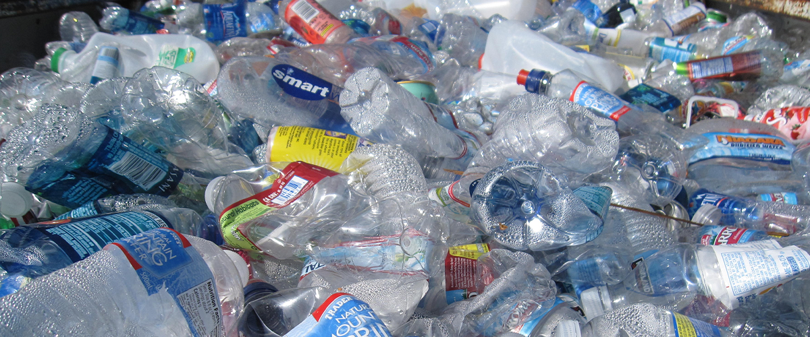

|
| Home | About | Contact | the Three Rs | Compost |
Make the Most Out of What You BuyBeing efficient with what you have helps you save money. Finding ways to reuse what you already have can save a bit of money gradually. We focus on basics to both help the environment and save you money at the same time.This site focuses on sharing about how to not waste what you usually throw away. We cover the basics of limiting what gets thrown in the landfill. Our goal is to inspire people to recycle in their everyday lives and take small actions everyday that end up being big. Composting is something that not a lot of people know about and should get more attention. ​Part of our campaign involves visiting places to share about the many ways to make the most of what you buy. Want us to visit? Head to our contact page and place an order. |
 |
|  |  |